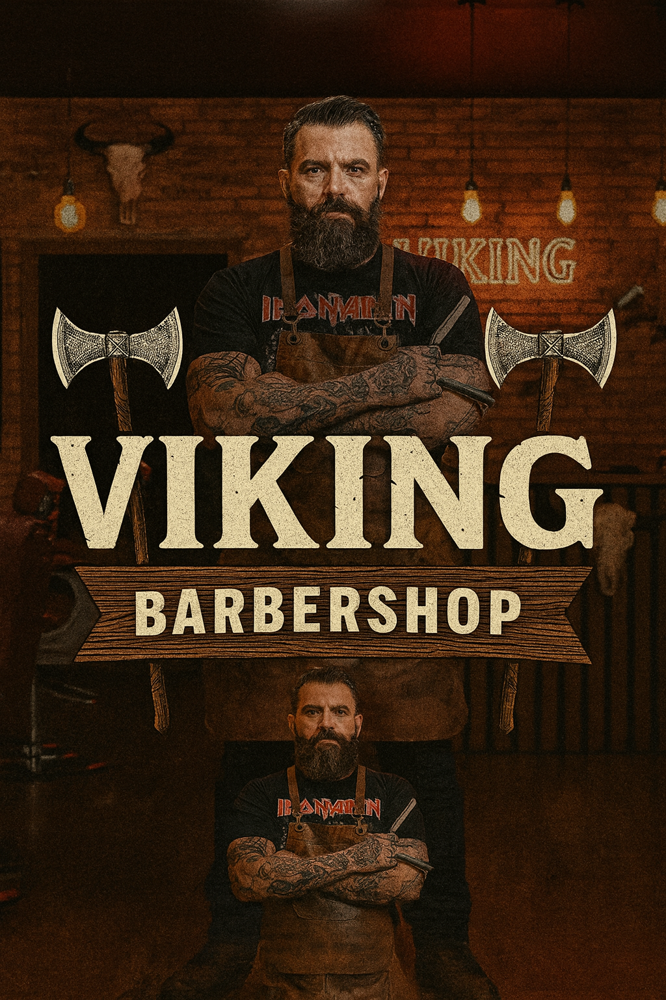

A Barbearia Viking
Resgatamos tradiçao das babearias clássicas dos anos 50. Aqui, o tempo passa devagar. Fundada por amigos apaixonados por rock e navalhas, a Viking oferece um ambiente único com sinuca , bar e os melhires profissionais da cidade. Seu visual em boas mãos.
